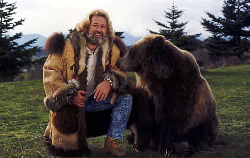

Mikael holds a BA in English Literature with a writing emphasis and also holds a Minor in History. He focuses most of his attention towards physical fitness, sports, small town game, and self improvement.


Having recently watched the film Mansome, and having viewed a few other trends in society, I began to question feminism’s role in the destruction of the true male. While I do not dispute the fact that feminism aims to destroy all that is man, I have wondered if the evolution of man’s tendencies really is a byproduct of feminism, as they like to boast; or whether it’s really a byproduct of male desire or consumerism.
Feminism in brief can be summed up as a movement initially designed to give women a more defined role in society, and has since turned into a movement to enslave and ruin mankind by reshaping society into a form that effectively creates a self implosion. As previously covered in other blog postings about feminism, it creates an imbalance to everything mankind evolved around, and will create death and despair through weakened individuals and unnatural gender roles.
Think of Soviet assignment failures where doctors were told to cook and cooks were told to operate. While their influence is clearly present, I don’t believe the evolution of “ femininity” in men is completely a byproduct of feminism, and the idea that it is just gives their meaningless agenda more credit than is due. They’re actually pretty big failures at the influence of man.
Am I saying that men naturally want to doll themselves up like women? Not entirely. I don’t believe men want to transform into wusses and wear women’s clothing and remove everything masculine. What it appears to be is an attempt at expression of wealth.
Dating back in history it can be observed of men wearing wigs in colonial times, and dressing like fairies during the renaissance. The key element during both of these periods was the abundance of wealth. So despite the absurdity of their attire, men could exclaim that they were very expensive, and in essence they could display their wealth.
The negative backlash of recent years has turned men from driving flashy cars to wearing “flashy” clothing. Although strange currently, it’s something that has been common in historical cycles, and therefore actually discredits any progress feminism attempts to claim. So long as the highest of men backlash against the worst trends (i.e., skinny jeans), some sort of dignity can be maintained in the male spectrum.
Lastly there is consumerism. This is probably the biggest influence upon the anti-male train. This also directly correlates to the above information. Being in a time of general prosperity (we aren’t growing crops in our backyard to survive the winter), it has been drilled into our heads to buy random products, show them off, and gain support. This affects men from the idea of needing the biggest TV all the way to the idea that they need to get manicures and pedicures to gain an edge in their appearance.
As a result, more products are marketed towards men such as aftershave, body waxing, and hair products. Marketing is designed to tell men to buy the products and then they will impress people through the use of them. Thus consumerism directly correlates with similar instances in history.
Therefore, none of these trends, whether good or bad, can be credited to feminism. While women have their role in affecting our behavior, they don’t have the decisive factor in the ability to directly alter them. Men have always needed to impress women in order to find a suitable mate.
What appears to work most effectively is being out of the ordinary. So having more muscles, being more vocal, more or less groomed, or having a more expensive car are things that all stand out. When the majority of men are less groomed, the one who chooses to groom will stand out. In retrospect, in a setting where more men groom, those who choose not to groom will stand out. What this means is that soon enough the idea of being a manly man will once again put you on top, if it hasn’t already begun in your area. And the reason behind this is entirely due to the combination of marketing and the natural instinct of men to compete with one another.

Merica!
In conclusion, feminism has failed at altering mans course of direction. Their existence is massively over-credited, and the only real bearing women have over the effect of men is to seek out exceptionally unique qualities. So while the recent trend has been to dress elegantly and remain highly groomed, eventually it may become desirable to be Grizzly Adams. And this will all be due to the natural desire of men to find a way to get laid more.
Don’t Miss: Why Swag Is Bad For Your Game